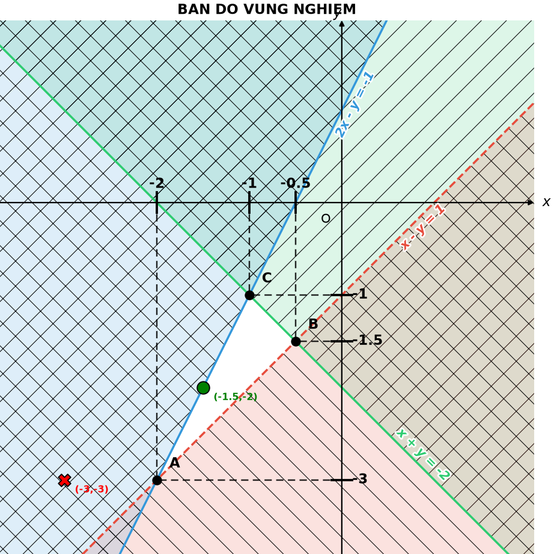

ỨNG DỤNG SYMPY VÀO BÀI TOÁN
HỆ BẤT PHƯƠNG TRÌNH
BẬC NHẤT HAI ẨN
BẬC NHẤT HAI ẨN
Tích hợp CNTT trong dạy Toán
Nhóm thực hiện
- Dương Thế Tâm
- Nguyễn Cao Minh Phúc
- Ngô Hữu Trí
- Trịnh Việt Anh Minh
Giảng viên hướng dẫn
TS. Nguyễn Đăng Minh PhúcHuế, 2026
import sympy as sp
Từ một hệ bất phương trình... làm sao nhìn thấy miền nghiệm?
CƠ SỞ LÝ THUYẾT
Hệ bất phương trình bậc nhất hai ẩn
Một bất phương trình = một nửa mặt phẳng
Điểm thử cho biết nửa nào là miền nghiệm
Quy trình 6 bước giải hệ bất phương trình
Khi số bất phương trình tăng lên...
Làm thủ công
- ✕Nhiều giao điểm cần tính
- ✕Tính toán lặp lại
- ✕Dễ nhầm khi kiểm tra đỉnh
- ✕Vẽ hình mất thời gian
- ✕Khó kiểm soát khi hệ lớn
SUPPORT
Với công cụ
- ✓Tự động hóa tính toán
- ✓Kiểm tra nhanh
- ✓Trực quan hóa
- ✓Dễ thử nghiệm nhiều hệ
Công cụ hỗ trợ tính toán, không thay thế tư duy toán học.
CÁC LỆNH SYMPY
Hộp công cụ cho bài toán
>>> import sympy as sp
>>> x, y = sp.symbols('x y', real=True)
>>> bpt = sp.sympify("x + y <= 4")
>>> bpt.rel_op
'<='Thư viện Python cho tính toán đại số ký hiệu
import math import sympy as sp print(math.sqrt(8)) print(sp.sqrt(8))
math.sqrt(8)2.8284271247461903gần đúngsp.sqrt(8)\(2\sqrt{2}\)chính xácpip install sympy numpy matplotlibJupyter NotebookGoogle ColabVS CodeNăm nhóm lệnh, mỗi nhóm một nhiệm vụ
Khai báo
symbols()Hai ẩn x, y là tọa độ điểm
Đọc bất phương trình
sympify()Từ chuỗi thành đối tượng toán học
Phân tích
lhs rhs rel_op coeff()Vế trái, vế phải, dấu và hệ số
Tính toán
subs() solve() linsolve()Thay giá trị, giải hệ để đối chiếu
Tính số và trực quan hóa
NumPy · itertools · MatplotlibGiao điểm, các cặp đường biên, vẽ miền nghiệm
symbols: hai ẩn x, y là tọa độ của một điểm
x, y = sp.symbols('x y', real=True)
print(x + y)
u = sp.Symbol('u')
v = sp.Symbol('v', real=True)
print(sp.sqrt(u**2))
print(sp.sqrt(v**2))x + y sqrt(u**2) Abs(v)
Lệnh làm gì
Tạo biến ký hiệu. Biểu thức x + y tồn tại mà chưa cần gán giá trị cho x, y.
Ý nghĩa toán học
x, y là hai ẩn (x; y), tọa độ điểm trên mặt phẳng Oxy. real=True: chỉ nhận giá trị thực.
Vì sao real=True quan trọng
Với v thực, √(v2) = |v| nên SymPy rút gọn được. Với u chưa rõ thuộc tập nào, biểu thức được giữ nguyên.
expand · factor · simplify: ba phép biến đổi cơ bản
print(sp.expand((x + y)**2)) print(sp.factor(x**2 - y**2)) print(sp.simplify((x**2 - y**2)/(x - y)))
x**2 + 2*x*y + y**2 (x - y)*(x + y) x + y
Trong chương trình
Chỉ expand được dùng: chuẩn hóa vế trái để đọc đúng hệ số của x và y. factor, simplify không dùng trực tiếp.
expand · khai triển
(x + y)2 = x2 + 2xy + y2
factor · phân tích nhân tử
x2 − y2 = (x − y)(x + y)
simplify · rút gọn
(x2 − y2)/(x − y) = x + y
Đúng khi x ≠ y, như cách rút gọn trên giấy.
sympify: biến chuỗi ký tự thành đối tượng toán học
bt = sp.sympify("2*x - y + 1", locals={'x': x, 'y': y})
print(bt)
print(type(bt))
bpt = sp.sympify("x + y <= 2", locals={'x': x, 'y': y})
print(bpt)
print(type(bpt))2*x - y + 1 <class 'sympy.core.add.Add'> x + y <= 2 <class 'sympy.core.relational.LessThan'>
Lệnh làm gì
Nhận một chuỗi như "x + y <= 2" và trả về đối tượng SymPy: biểu thức Add, hoặc quan hệ LessThan (dấu ≤).
Ý nghĩa toán học
Với máy tính, chuỗi ban đầu chưa mang nghĩa toán học. Mọi thao tác sau đều làm việc trên đối tượng, không trên chuỗi.
Vì sao cần locals
Không có locals, SymPy tự tạo một biến x mới, khác biến x đã khai báo. Chuỗi phải đúng cú pháp Python: * cho phép nhân, ** cho lũy thừa.
rel_op · lhs · rhs: ba thành phần của một bất phương trình
bpt = sp.sympify("x - y < 3", locals={'x': x, 'y': y})
print(type(bpt).__name__)
print(bpt.rel_op)
print(bpt.lhs)
print(bpt.rhs)
print(isinstance(x + y, sp.core.relational.Relational))StrictLessThan < x - y 3 False
Bốn dấu, bốn lớp đối tượng
Ý nghĩa toán học
Vế trái, vế phải, dấu ứng với lhs, rhs, rel_op. Dấu nghiêm ngặt (>, <) cho đường biên nét đứt; dấu ≥, ≤ cho nét liền. Chỉ cần đọc rel_op là chương trình biết cách vẽ.
Kiểm tra đầu vào
isinstance(..., Relational) phát hiện biểu thức không phải bất phương trình. Eq có rel_op là '==', nên chương trình từ chối phương trình.
coeff · subs: từ bất phương trình đến (a, b, c)
bpt = sp.sympify("3*x + 2*y <= 6", locals={'x': x, 'y': y})
hieu = sp.expand(bpt.lhs - bpt.rhs)
print(hieu)
a = hieu.coeff(x)
b = hieu.coeff(y)
d = hieu.subs({x: 0, y: 0})
c = -d
print(a, b, c)3*x + 2*y - 6 3 2 6
Ý nghĩa toán học
Hiệu là 3x + 2y − 6, nên a = 3, b = 2, c = 6 và đường biên là 3x + 2y = 6. Biến không xuất hiện thì hệ số bằng 0 (như x ≥ 0 có b = 0).
subs còn dùng để thử điểm
Đây là phương pháp điểm thử ở Chương 1. Với cả hệ, all(...) thể hiện phép giao các tập nghiệm.
Lưu ý sai số
Số thực lưu gần đúng, nên chương trình tự viết hàm so sánh có ngưỡng sai số 10−7 thay vì dùng trực tiếp subs.
solve · linsolve: tìm giao điểm hai đường biên
pt1, pt2 = sp.Eq(x + y, 2), sp.Eq(x - y, 1) print(sp.solve(sp.Eq(2*x - 4, 0), x)) print(sp.solve(pt1, y)) print(sp.solve([pt1, pt2], [x, y])) print(sp.linsolve([pt1, pt2], (x, y)))
[2]
[2 - x]
{x: 3/2, y: 1/2}
{(3/2, 1/2)}Trong chương trình
solve, linsolve không dùng trực tiếp: chỉ để đối chiếu với np.linalg.solve.
Ý nghĩa toán học
Hệ x + y = 2, x − y = 1 cho giao điểm (3/2 ; 1/2) của hai đường biên, viết bằng phân số chính xác. Đây là thao tác tìm đỉnh của miền nghiệm ở Chương 1.
Bất phương trình theo một ẩn
Dấu & là "và": phép giao các nửa mặt phẳng.
Giới hạn của SymPy
Giải đồng thời theo cả hai ẩn: NotImplementedError. SymPy không cho danh sách đỉnh, không biết miền bị chặn hay không, không vẽ hình. Vì vậy cần NumPy và Matplotlib.
Ba công cụ đảm nhiệm phần còn lại
NumPy
A = np.array([[1., 1.], [1., -1.]]) C = np.array([2., 1.]) np.linalg.det(A) # -2.0 np.linalg.solve(A, C) # [1.5 0.5]
Định thức khác 0: hai đường cắt nhau tại một điểm. Gần 0: song song hoặc trùng.
itertools
itertools.combinations(
['d1', 'd2', 'd3'], 2)
# ('d1','d2') ('d1','d3')
# ('d2','d3')Với n đường biên có n(n − 1)/2 cặp, mỗi cặp cho một giao điểm ứng viên làm đỉnh.
Matplotlib
nhan = np.where(X + Y <= 2, 1, 0)
ax.contourf(X, Y, nhan,
levels=[-0.5, 0.5])
ax.axline((0, 2), (2, 0))Phần bị tô là phần không phải nghiệm; miền nghiệm của hệ được để trắng.
SymPy lo phần đại số. Phần tính số và vẽ hình thuộc về ba công cụ này.
Một pipeline phối hợp ba công cụ
Nhập hệ bất phương trình
"x + y <= 4"
Đối tượng SymPy
Hệ số (a, b, c) và dấu
Giao điểm mọi cặp đường biên
Lọc đỉnh, kiểm tra điểm
Vẽ miền nghiệm
SymPy lo phần đại số. Tìm đỉnh và vẽ hình do NumPy, itertools, Matplotlib đảm nhiệm.
ỨNG DỤNG SYMPY
Tổng hợp các lệnh thành một chương trình hoàn chỉnh
Các lệnh ở Chương 2 nằm ở đâu trong chương trình?
SYMPY · ĐẠI SỐ
NUMPY · ITERTOOLS · TÍNH SỐ
MATPLOTLIB · VẼ HÌNH
giai_he_bpt() gọi các hàm trên để giải · ve_ban_do() để vẽ
Bốn dạng bài toán, một quy trình chung
Miền nghiệm là đa giác bị chặn
Miền nghiệm không bị chặn
Kiểm tra điểm có thuộc miền nghiệm
Bài toán mô hình hóa thực tế
Cả bốn dạng đều dùng cùng một quy trình nhập liệu: viết hệ bất phương trình dưới dạng chuỗi.
Từ bài toán đến miền nghiệm
Ba dòng code, một miền nghiệm
he_bpt_chuoi = ["x >= 0", "y >= 0",
"2*x + y <= 8", "x + 3*y <= 9"]
danh_sach_bpt, mo_ta = giai_he_bpt(
he_bpt_chuoi, diem_test=[(2, 1), (5, 5)])
ve_ban_do(danh_sach_bpt, mo_ta,
diem_test=[(2, 1), (5, 5)])HE BAT PHUONG TRINH BAC NHAT HAI AN:
d1: x >= 0
d2: y >= 0
d3: 2*x + y <= 8
d4: x + 3*y <= 9
MIEN NGHIEM:
=> Mien nghiem cua he bat phuong trinh tren la da giac ABCD,
voi A(0, 0), B(4, 0), C(3, 2), D(0, 3).
KIEM TRA CAC DIEM TEST:
Diem (2, 1): THUOC mien nghiem
Diem (5, 5): KHONG thuoc mien nghiem (vi pham: d3, d4)
cùng thư mục với index.html
Toàn bộ mã nguồn đăng tại kho GitHub của nhóm
$ python hpt2an.py

qr_github.png
cùng thư mục
với index.html
Quét mã để mở kho mã nguồn
Làm tay và sử dụng chương trình
Công cụ hỗ trợ tính toán,
không thay thế tư duy toán học.
Học sinh suy nghĩ trước, công cụ kiểm chứng sau
DỰ ĐOÁN
Đoán hình dạng miền nghiệm
SUY LUẬN
Lập luận bằng hình học
SỬ DỤNG CÔNG CỤ
Chạy chương trình
KIỂM CHỨNG
So với dự đoán ban đầu
ĐIỀU CHỈNH
Sửa lại lập luận nếu lệch
TỪ CÔNG CỤ TÍNH TOÁN ĐẾN CÔNG CỤ HỖ TRỢ TƯ DUY
Toán học
Hiểu bản chất hệ bất phương trình và miền nghiệm.
Công nghệ
SymPy + NumPy + Matplotlib giúp tự động hóa các thao tác tính toán và trực quan hóa.
Sư phạm
Công cụ nên được sử dụng để kiểm chứng, khám phá và hỗ trợ tư duy.